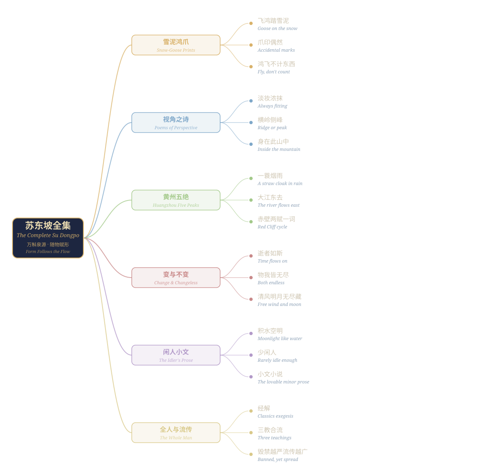

苏东坡全集
〇 · 书籍信息
基本信息
| 书名 | 「全集」之名来之不易——「迄今为止，汇编苏东坡全部诗、词、文作品及单行本著作如《苏氏易传》《东坡书传》《东坡志林》等的《苏东坡全集》，则尚未有过」——本套据《三苏全书》甄选校订：全书分八册，包括十五种作品 |
|---|---|
| 结构 | 八册十五种——第一、二册：《诗集》《词集》；第三至六册：《文集》；第七册：《苏氏易传》《东坡书传》《论语说》（辑本）；第八册：《东坡志林》等——诗文之外连经解与笔记一起收全 |
| 词的定位 | 「苏东坡在词的发展史上的主要贡献是创立了豪放词，但他并不排斥婉约词」——「在现存三百多首词中，真正堪称豪放词的并不多，绝大多数仍属婉约词」——王士禛评《蝶恋花·春景》：「恐屯田缘情绮靡未必能过。孰谓坡但解『大江东去』耶？」 |
| 一句话 | 「吾文如万斛泉源，不择地皆可出……常行于所当行，常止于不可不止」——东坡之美不在哪一首名篇，在「随物赋形」这一个动作：一蓑烟雨里写豪放，积水空明里写婉约，清风明月里写旷达。 |
一 · 核心主题总览
这部全集里的四组母题：① 万斛泉源
东坡在《自评文》里总结写作经验：「吾文如万斛泉源，不择地皆可出。在平地滔滔汩汩，虽一日千里无难。及其与山石曲折，随物赋形，而不可知也。所可知者，常行于所当行，常止于不可不止，如是而已矣」——出版说明逐一解读：「如万斛泉源」是「不能不为」时才写，「不择地皆可出」是信笔抒姿无固定格式，「随物赋形」是观察缜密文笔细腻——「要论苏东坡散文的特点，恐怕没有比他自己的这一归纳更准确的了」。
② 豪放与婉约一体
东坡立豪放词而不废婉约：那场著名对答——「柳郎中词，只合十七八女郎，执红牙板，歌『杨柳岸，晓风残月』；学士词，须关西大汉，铜琵琶，铁绰板，唱『大江东去』」——苏东坡「听后，笑得前翻后仰」；但全集的实况是：《江城子·十年生死》的婉约「不思量，自难忘」，王士禛断言柳永「缘情绮靡未必能过」——两副嗓子在一个人身上：豪放是他的发明，婉约是他的底蕴。
③ 文赋与随物赋形
赋体的解放者：「晚唐杜牧的《阿房宫赋》，开始冲破这种牢笼，苏东坡更不受这种限制，形成了一种以散代骈、句式参差、用典较少、押韵不严的文赋」——前《赤壁赋》「从泛舟大江有羽化登仙之乐，转入『侣鱼虾而友麋鹿』的现实苦闷，最后又以『清风』『明月』之乐作自我安慰，写得波澜起伏，曲折多姿」；后《赤壁赋》则「给人一种清冷的感觉」——赋在他手里从应试牢笼变回自由文体。
④ 中庸与三教
政治人格的底色：「他正是从中庸思想出发，既反对守旧派的因循守旧，又反对王安石的激进变法」——「苏东坡政治主张的特点就是『执其两端而用其中』」；而精神世界是三教合流：苏辙墓志铭记他读《庄子》叹曰「吾昔有见于中，口未能言，今见《庄子》，得吾心矣」……「后读释氏书，深悟实相，参之孔老，博辩无碍」——「苏东坡一生政治上坚持辟佛老，而其他方面则在融合佛老」——辟其所不可不辟，融其所可融
二 · 第一段 雪泥鸿爪 —— 诗中的漂泊哲学—— 渑池 · 西湖 · 庐山 ——
人生到处知何似
《和子由渑池怀旧》是东坡诗哲学的开山：「人生到处知何似，应似飞鸿踏雪泥。泥上偶然留指爪，鸿飞那复计东西」——二十六岁的苏轼把人生比作飞鸿踏雪：爪印是偶然，鸿飞是必然，何必计较痕迹；尾联「往日崎岖还记否，路长人困蹇驴嘶」自注「往岁马死于二陵，骑驴至渑池」——大哲理落在小驴背上：诗的举重若轻，从此定型。
◆ 语言学习 · 概念 · 雪泥鸿爪
| 飞鸿踏雪泥 | 人生偶留痕迹：来去不计东西 |
|---|---|
| 偶然与必然 | 爪印偶然，鸿飞必然——漂泊的哲学定调 |
| 蹇驴嘶 | 自注的落地：大道理配小细节 |
| 和子由 | 兄弟唱和：苏诗最稳定的情感线 |
句型 ｜ 「泥上偶然留指爪，鸿飞那复计东西。」——漂泊者的第一哲学：痕迹留给世界，方向留给自己——计较爪印的人走不远。
西湖与庐山：看的方法
两首题壁诗是「视角」的教科书：「水光潋滟晴偏好，山色空濛雨亦奇。欲把西湖比西子，淡妆浓抹总相宜」——晴雨皆宜：审美不挑天气；而《题西林壁》更进一步：「横看成岭侧成峰，远近高低各不同。不识庐山真面目，只缘身在此山中」——全集还收了东坡自己的创作自记：「仆初入庐山……最后与总老同游西林，又作一绝……仆庐山之诗，尽于此矣」——从「应接不暇，遂发意不欲作诗」到「尽于此矣」：一首哲理诗的诞生过程，全程留档。
◆ 语言学习 · 概念 · 视角
| 淡妆浓抹 | 西湖的适配哲学：总相宜 |
|---|---|
| 横岭侧峰 | 视角决定形状：真相在视角之外 |
| 身在此山 | 当局者的认知困境 |
| 庐山之诗尽于此 | 自记收束：创作过程也可入集 |
习语 ｜ 「不识庐山真面目，只缘身在此山中。」——全集最高产的成语之一：认识论的千年格言——跳出系统的唯一办法，是承认自己在系统里。
三 · 第二段 黄州五绝 —— 贬谪期的创作爆发—— 定风波 · 念奴娇 · 赤壁 · 承天寺 ——
定风波：一蓑烟雨
黄州年谱一笔记尽：「贬官在黄州。在东坡筑雪堂，自号东坡居士。三月七日游沙湖，作《定风波》；……七月和十月两次游赤壁」。《定风波》全词：「莫听穿林打叶声。何妨吟啸且徐行。竹杖芒鞋轻胜马。谁怕。一蓑烟雨任平生。料峭春风吹酒醒。微冷。山头斜照却相迎。回首向来潇洒处。归去。也无风雨也无晴」——从「谁怕」到「也无风雨也无晴」：同一双手，把狼狈的行程写成境界的认证。
◆ 语言学习 · 概念 · 也无风雨
| 莫听 | 穿林打叶声的第一次降维：声音失去权威 |
|---|---|
| 竹杖芒鞋 | 「轻胜马」：装备的重新估值 |
| 一蓑烟雨任平生 | 把天气换成命运来穿 |
| 也无风雨也无晴 | 终点句：情绪的对称取消 |
句型 ｜ 「回首向来潇洒处。归去。也无风雨也无晴。」——黄州词的终点句：风雨与晴都是情绪的投影，取消两者才算真正到家——逆境哲学的最高形式是「平常」。
大江东去与清风明月
同期两篇巨作同题赤壁：《念奴娇》「大江东去，浪淘尽、千古风流人物……乱石穿空，惊涛拍岸，卷起千堆雪……人间如梦，一尊还酹江月」；《前赤壁赋》「清风徐来，水波不兴……白露横江，水光接天」，主客对话的核心一答：「客亦知夫水与月乎？逝者如斯，而未尝往也；盈虚者如彼，而卒莫消长也。盖将自其变者而观之，则天地曾不能以一瞬；自其不变者而观之，则物与我皆无尽也，而又何羡乎」——结尾把答案落成共享产权：「惟江上之清风，与山间之明月……取之无禁，用之不竭，是造物者之无尽藏也，而吾与子之所共食」——怀古的豪放与说理的旷达，在同一个月亮下会师。
◆ 语言学习 · 概念 · 变与不变
| 逝者如斯未尝往 | 水与月的双重论证：变中有不变 |
|---|---|
| 物与我皆无尽 | 自其不变者观之：永生的另一写法 |
| 无尽藏 | 清风明月免费且无限：共食的旷达 |
| 一尊还酹江月 | 豪放的收束：把悲慨还给江月 |
习语 ｜ 「自其不变者而观之，则物与我皆无尽也，而又何羡乎！」——《赤壁赋》的哲学引擎：换个参照系，哀伤自动失效——旷达不是乐观，是换坐标的技术。
四 · 第三段 闲人与小文 —— 志林的世界—— 积水空明 · 小文小说 ——
记承天寺夜游
第八册《东坡志林》的小文是全集的私藏：「元丰六年十月十二日夜，解衣欲睡，月色入户，欣然起行。念无与为乐者，遂至承天寺寻张怀民。怀民亦未寝，相与步于中庭。庭下如积水空明，水中藻、荇交横，盖竹柏影也。何夜无月？何处无竹柏？但少闲人如吾两人耳」——出版说明评：「短短八十余字，先写两人夜不能寐……最后发出明月竹柏处处有，但少闲人欣赏的感慨……表现了他贬官黄州时那种强作轻松愉快的苦闷心境」——袁中道说得直白：「东坡之可爱者，多其小文小说。其高文大册，人固不深爱也」。
◆ 语言学习 · 概念 · 闲人
| 积水空明 | 月光的比喻：庭下之水不存在，只是光 |
|---|---|
| 藻荇交横 | 竹柏影的误认：错觉写成生态 |
| 少闲人 | 「闲」是审美资格：被贬反而领到 |
| 小文小说 | 袁中道的分类：可爱处不在高文大册 |
句型 ｜ 「何夜无月？何处无竹柏？但少闲人如吾两人耳。」——小文的收束公式：风景人人有份，缺的从来是「闲」——闲不是无所事事，是被贬后仍然起行找月亮的能力。
经解与笔记的全人
全集的野心在第八册与第七册：收《苏氏易传》《东坡书传》《论语说》与《东坡志林》——诗、词、文之外还有经解与笔记：一个人如何读《易经》《尚书》《论语》，和一个人如何写「大江东去」，是同一个苏轼——出版说明强调这是第一部真全集：「汇编苏东坡全部诗、词、文作品及单行本著作……的《苏东坡全集》，则尚未有过」——而版本史章回更是曲折：东坡六集、七集、崇宁二年「诏毁苏东坡诗文集印版」，「但毁禁越严，流传越广」——一部全集的编辑史，就是苏东坡被反复重新发现的历史。
◆ 语言学习 · 概念 · 全人
| 经解 | 《易传》《书传》《论语说》：学者苏轼 |
|---|---|
| 东坡志林 | 笔记小文的集成：可爱处所在 |
| 东坡六集→七集 | 苏辙墓志铭到晁公武著录：版本谱系 |
| 毁禁与流传 | 崇宁二年毁版：「流传越广」的反效应 |
习语 ｜ 「但毁禁越严，流传越广。」——版本史最有力的判词：禁令是最有效的广告：崇宁毁版换来南宋编刻注释成风——作品的生命力靠读者，不靠权力。
五 · 人物图鉴与成长弧线—— 主角配角 · 一张表看穿 ——
主要人物
苏轼（苏东坡）——全集主角——1036—1101：名轼，字子瞻，「因被贬黄州时曾居于东坡，自号东坡居士」——诗文书画四绝，「可能也是最受大众喜爱的古代文化人物」
曾枣庄、舒大刚——全集主编——2001 年曾主编《三苏全书》，本套据其「重加甄选校订」：八册十五种的第一部真「全集」
苏辙——弟弟与传记作者——《亡兄子瞻端明墓志铭》：「吾昔有见于中，口未能言，今见《庄子》，得吾心矣」——东坡六集的最早著录者
张怀民——承天寺的同谋——「怀民亦未寝，相与步于中庭」：闲人二缺一的候补——中国文化里最著名的一次夜访
次要人物（功能位）
| 柳永 | 婉约的对拍者——「柳郎中词，只合十七八女郎……歌杨柳岸晓风残月」：与东坡在幕士口中隔空对唱 |
|---|---|
| 王安石 | 变法的对手——东坡「既反对守旧派的因循守旧，又反对王安石的激进变法」：执两端的另一端 |
| 杜牧 | 文赋的先行者——《阿房宫赋》「开始冲破这种牢笼」：东坡接着把赋彻底解放 |
| 朝云 | 侍妾——「通判杭州。纳侍妾朝云」：年谱里的一行，后世传说里的主角 |
六 · 主题与象征—— 每个道具都在说话 ——
| 飞鸿 ↔ 爪印 | 漂泊哲学——「泥上偶然留指爪，鸿飞那复计东西」：痕迹与方向的分工 |
|---|---|
| 蓑衣 ↔ 烟雨 | 黄州装备——「一蓑烟雨任平生」：把天气穿成命运 |
| 清风明月 ↔ 无尽藏 | 旷达产权——「取之无禁，用之不竭」：造物者的公共资产 |
| 积水空明 ↔ 月光 | 小文美学——庭下无水，只有光：错觉的诚实写法 |
| 毁版 ↔ 流传 | 作品生命力——「毁禁越严，流传越广」：读者比权力长寿 |
七 · 写作手法赏析—— 怎么写，就能怎么学 ——
① 随物赋形
《自评文》的自评法——「常行于所当行，常止于不可不止」：写作论被作者自己一次说完
② 自注落地
「往岁马死于二陵，骑驴至渑池」——大哲理自配小细节：举重若轻的技术之一
③ 创作自记入集
《题西林壁》全过程留档——「仆庐山之诗，尽于此矣」：把如何写出这首诗也当作作品
④ 双册对照
词集与文集同题互证——《念奴娇》与《赤壁赋》同游同月：豪放与旷达的双声道
⑤ 年谱开路
出版说明附生平年表——「贬官在黄州」等一行年表直接对应创作高峰：知人论世的底座
八 · 名段欣赏—— 原文精读 · 逐段赏析 ——
九 · 金句摘录—— 14 条 · 中英对照 · 带出处 ——
"人生到处知何似，应似飞鸿踏雪泥。泥上偶然留指爪，鸿飞那复计东西。"—— 《和子由渑池怀旧》· 诗集
"吾文如万斛泉源，不择地皆可出。……常行于所当行，常止于不可不止，如是而已矣。"—— 《自评文》· 文集
"水光潋滟晴偏好，山色空濛雨亦奇。欲把西湖比西子，淡妆浓抹总相宜。"—— 《饮湖上初晴后雨》· 诗集
"横看成岭侧成峰，远近高低各不同。不识庐山真面目，只缘身在此山中。"—— 《题西林壁》· 诗集
"明月几时有，把酒问青天。……但愿人长久，千里共婵娟。"—— 《水调歌头》· 词集
"大江东去，浪淘尽、千古风流人物。……人间如梦，一尊还酹江月。"—— 《念奴娇·赤壁怀古》· 词集
"莫听穿林打叶声。何妨吟啸且徐行。竹杖芒鞋轻胜马。谁怕。一蓑烟雨任平生。"—— 《定风波》· 词集
"回首向来潇洒处。归去。也无风雨也无晴。"—— 《定风波》· 词集
"十年生死两茫茫。不思量。自难忘。千里孤坟，无处话凄凉。"—— 《江城子·乙卯正月二十日夜记梦》· 词集
"清风徐来，水波不兴。举酒属客，诵明月之诗，歌窈窕之章。"—— 《前赤壁赋》· 文集
"自其不变者而观之，则物与我皆无尽也，而又何羡乎！"—— 《前赤壁赋》· 文集
"惟江上之清风，与山间之明月……取之无禁，用之不竭，是造物者之无尽藏也。"—— 《前赤壁赋》· 文集
"庭下如积水空明，水中藻、荇交横，盖竹柏影也。何夜无月？何处无竹柏？但少闲人如吾两人耳。"—— 《记承天寺夜游》· 志林
"苏东坡一生政治上坚持辟佛老，而其他方面则在融合佛老。"—— 出版说明
十 · 拓展阅读—— 原文 · 词条 · 译文 ——
十一 · 个人感悟与心得—— 三点心得 ——
三点感悟
① 限制是形态的来源
「随物赋形」的推论：水在平地只是流水，遇山石曲折才成瀑布与深潭——人生的曲折不是写作的敌人，是形态的来源：黄州没有毁掉苏轼，是给了他「万斛泉源」最陡的落差。
② 换坐标比硬扛高级
《赤壁赋》的技术：「自其不变者而观之」——旷达不是说服自己「没关系」，是换一个参照系让问题自动缩水：坐标一换，哀伤失效。
③ 闲是被贬后仍起行找月亮
「少闲人」的当代读法：闲不是假期多少，是「月色入户，欣然起行」的反应速度——被生活打了折扣的人，仍能连夜出门找美，这才叫闲。
八册读毕，苏东坡留下的不是一个「乐观」的标签，而是一套完整的失意处理流程——雪泥鸿爪（认账）→ 一蓑烟雨（接住）→ 也无风雨也无晴（放平）→ 清风明月（转产）→ 积水空明（夜游）——全流程零退货。中华书局把经解和笔记都收进来是对的：因为「大江东去」的作者和「庭下如积水空明」的作者，必须是同一个人——前者是豪迈，后者是温柔，合起来才是完整。
十二 · 一页速查（复习用）
| 雪泥鸿爪 | 爪印偶然鸿飞必然：漂泊哲学开山 |
|---|---|
| 万斛泉源 | 随物赋形：常行于所当行 |
| 也无风雨也无晴 | 黄州词的终点：情绪对称取消 |
| 清风明月 | 造物者无尽藏：取之无禁 |
| 少闲人 | 小文美学：积水空明八十余字 |
十三 · 全书思维导图—— 一图纵览 ——

一图纵览全书骨架 · 中英双语对照 · 手机端可左右滑动查看全图